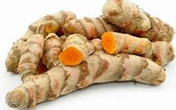
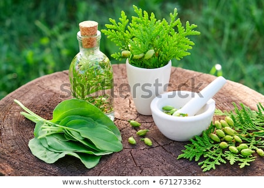
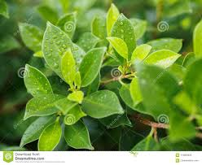
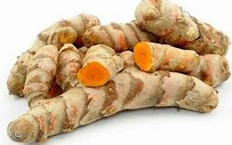
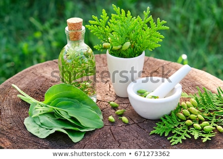
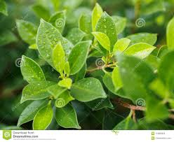

| | TEMULAWAK |
KITA SAKSIKAN

: Temulawak
Temulawak (Curcuma xanthorhiza roxb) yang termasuk dalam keluarga jahe (zingiberaceae), merupakan tanaman obat herbal asli Indonesia. Penyebaran tanaman temulawak banyak tumbuh di Pulau Jawa, Maluku dan Kalimantan.
Karakteristik temulawak tumbuh sebagai semak tanpa batang, mulai dari pangkalnya sudah berupa tangkai daun yang panjang berdiri tegak. Tinggi tanaman antara 2-2,5 milimeter,
daunnya panjang bundar seperti daun pisang yang mana pelepah daunnya saling menutup membentuk batang.
Tanaman ini bisa tumbuh subur di dataran rendah dengan ketinggian 750 meter di atas permukaan laut, tanaman ini bisa dipanen setelah 8-12 bulan dengan ciri-ciri daun menguning.
Umbinya akan tumbuh di pangkal batang berwarna kuning gelap atau cokelat muda dengan diameter panjang 15 cm dan 6 cm, baunya harum dan sedikit pahit dan agak pedas.
Temulawak sudah lama digunakan secara turun temurun oleh nenek moyang kita untuk mengobati sakit kuning, diare, maag, perut kembung dan pegal-pegal.
Namun akhir-akhir ini juga bisa dimanfaatkan untuk menurunkan lemak darah, mencegah penggumpalan darah sebagai antioksidan dan memelihara kesehatan dengan meningkatkan kekebalan tubuh.
|
| | KUNYIT |

: Kunyit
Kunyit merupakan tanaman obat berupa semak dan bersifat tahunan (perenial) yang tersebar di seluruh daerah tropis, tanaman kunyit tumbuh subur dan liar disekitar hutan atau bekas kebun.
Diperkirakan berasal dari Binar pada ketinggian 1300-1600 mdpl, ada juga yang mengatakan bahwa kunyit berasal dari India.
Di daerah Jawa, kunyit banyak digunakan sebagai ramuan jamu karena berkhasiat menyejukkan, membersihkan, mengeringkan, menghilangkan gatal,
dan menyembuhkan kesemutan. Manfaat utama tanaman kunyit, yaitu sebagai bahan obat herbal, bahan baku industri jamu dan kosmetik, bahan bumbu masak, peternakan dan lain-lain.
Di samping itu rimpang tanaman kunyit itu juga bermanfaat sebagai anti-inflamasi, antioksidan, anti-mikroba, pencegah kanker, anti-tumor,
dan menurunkan kadar lemak darah dan kolesterol, serta sebagai pembersih darah.
. |
| | KEJI BELING |

:Keji Beling
Keji beling
Keji beling atau orang Jawa menyebutnya dengan nama sambang geteh, sementara di tanah pasundan dikenal dengan sebutan remek daging, reundeu beureum, dan orang ternate menyebutnya dengan nama lire.
Tumbuhan ini memiliki banyak mineral seperti kalium, kalsium, dan natrium serta unsure mineral lainnya.
Disamping itu juga terdapat asam silikat, tannin, dan glikosida. Kegunaannya sebagai obat disentri, diare (mencret) dan obat batu ginjal serta dapat juga sebagai penurun kolesterol.
Daun tanaman ini bisa direbus untuk diminum airnya, juga dapat dimakan sebagai lalapan setiap hari dan bisa dikonsumsi secara teratur.
Daun keji beling juga kerap digunakan untuk mengatasi tubuh gatal kena ulat atau semut hitam, caranya dengan mengoleskan daun keji beling pada bagian yang gatal tersebut.
Sementara untuk mengatasi diare (mencret), disentri, seluruh bagian dari tanaman ini direbus, selama lebih kurang setengah jam, kemudian airnya diminum. Prosesnya yang sama untuk mengobati batu ginjal.
Daun keji beling juga dapat mengatasi kencing manis dengan cara dimakan sebagai lalapan secara teratur setiap hari. Demikian pula untuk mengobai penyakit lever (sakit kuning), ambeien (wasir) dan maag dengan cara dimakan secara teratur.. |
|
 ~ BYE REDO ~ ~ BYE REDO ~
|
|
|
|
 




